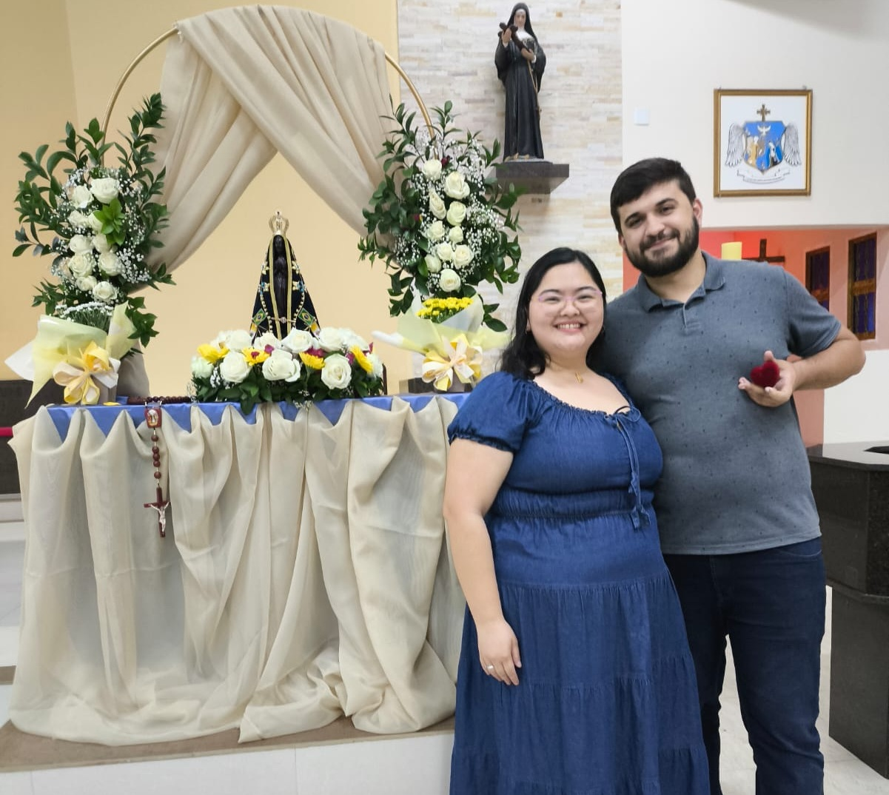
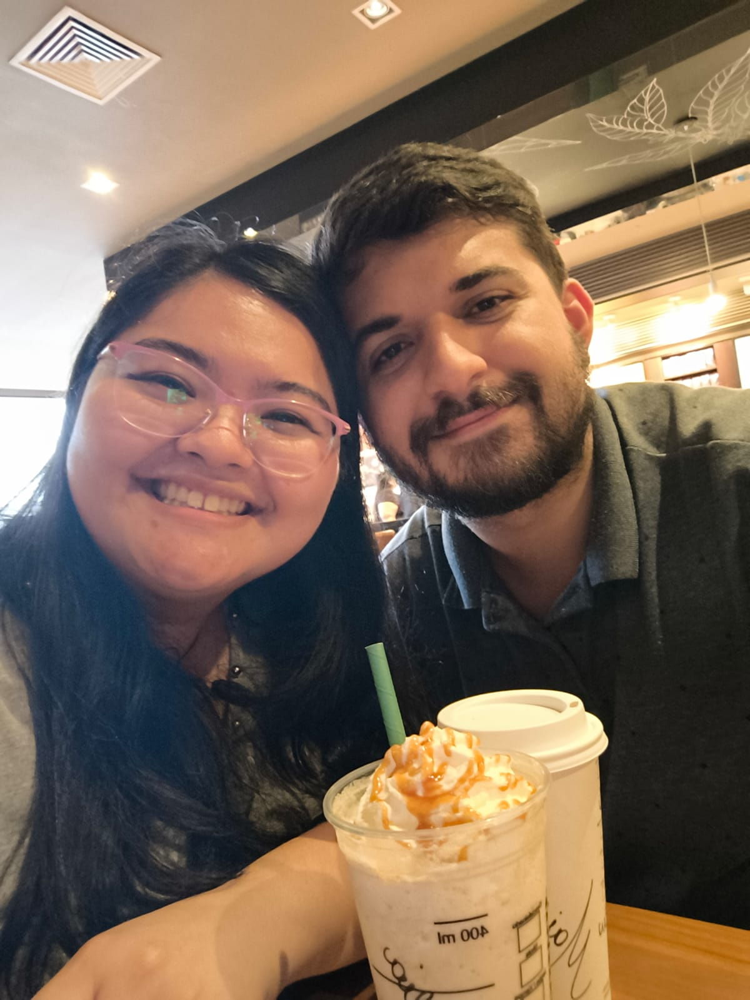

Save the Date
Giulia&Maikon
3 de abril de 2027 · 16h · Votorantim, SP
Vamos nos casar e queremos você com a gente!
Adicionar ao calendário Confirmar presença Responda até 10 de novembro de 2026. Nossa história
Nossa história
Nos conhecemos ainda crianças, nas aulas de violão. Anos depois, nos reencontramos em um festival e, em 6 de dezembro de 2024, começamos a namorar. Em 12 de outubro de 2025, ficamos noivos.
Agora estamos preparando nosso casamento e queremos dividir esse dia com você. Guarde a data: 3 de abril de 2027.

Desde as aulas de violão
Uma história que começou bem antes do namoro.
Dividimos as mesmas aulas de violão quando éramos crianças — os mesmos acordes, a mesma professora, a mesma dificuldade com o dó maior. Crescemos, a vida seguiu, e por um tempo os caminhos foram paralelos sem se tocar.
Foi em um festival que tudo mudou. Entre as músicas, ele olhou para ela de um jeito que nenhuma aula havia ensinado. A partir daí, as conversas não tinham mais hora para terminar, as ideias combinavam, e o amor foi crescendo no ritmo certo.
A cerimônia
3 de abril de 2027 · às 16h
Paróquia Nossa Senhora Anunciação e dos Arcanjos
Rua Antônio da Silva, 72, Jardim São Matheus
Votorantim, SP
Confirme sua presença
Responda até 10 de novembro de 2026. Depois de preencher, envie a mensagem no WhatsApp para que a resposta chegue até nós.
Giulia & Maikon
Guarde esse dia para nós.
3 de abril de 2027 · Votorantim, SP
Adicionar ao calendário